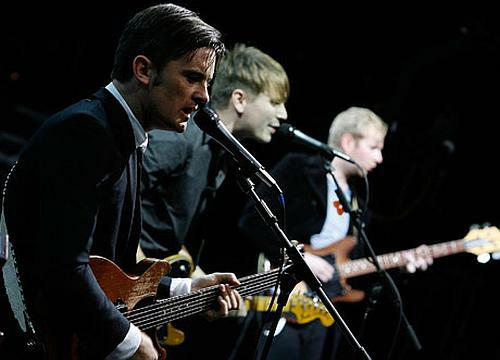
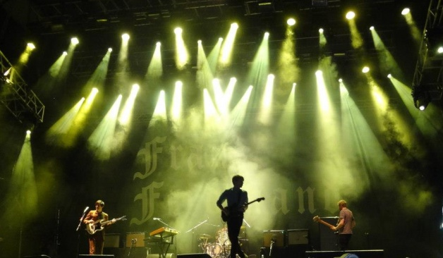
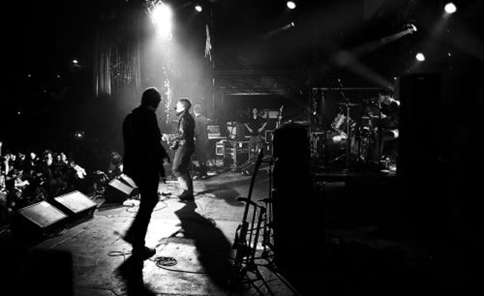
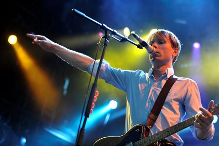
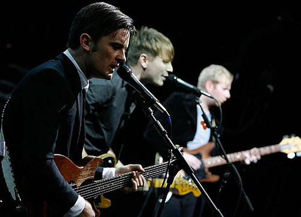
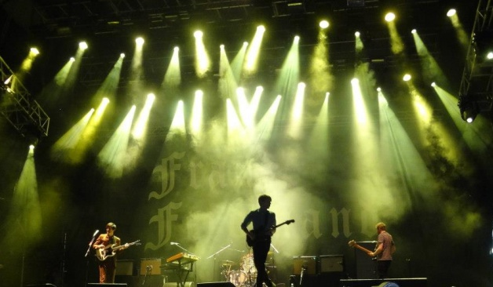
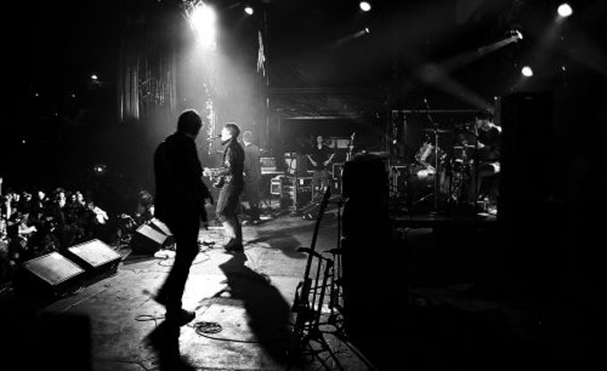
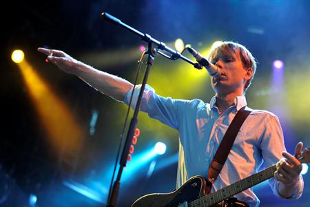

Los precios para el concierto de Franz Ferdinand en Chile
La banda escocesa se presentará el próximo 28 de septiembre en el Movistar Arena. Cuatro visitas y cinco conciertos en nuestro país ha concretado Franz Ferdinand. Ahora regresan para mostrarnos su cuarto álbum "Right Thoughts, Right Words, Right Action". La venta de las entradas comienza este mediodía y se podrán conseguir a través del sistema Puntoticket: Preventa Tribuna $18.000 Platea alta $25.000 Cancha general $32.000 Platea Baja Ailver $40.000 Platea Baja Golden $55.000 General Tribuna $22.500 Platea alta $31.250 Cancha general $40.000 Platea baja silver $50.000 Platea baja golden $68.750
Franz Ferdinand, los reyes del nuevo rock bailable
La banda de Glasgow hará bailar a los asistentes del Bilbao BBK Live, el jueves 10 de julio. La banda de Glasgow Franz Ferdinand actuará como cabeza de cartel del Bilbao BBK Live 2014 el jueves 10 de julio en el escenario principal de Kobetamendi. La banda de Alex Kapranos hará bailar a los asistentes al festival como ya lo hizo en sus anteriores visitas a Euskal Herria, como en 2010 a Donostia y un año antes en el pabellón de La Casilla de Bilbao. La efervescencia de Franz Ferdinand comenzó en 2003, cuando ficharon por el sello Domino Records. Tras la publicación del EP "Darts of pleasure" obtuvieron repercusión internacional y "Franz Ferdinand", su primer disco largo, se publicó a comienzos de 2004 con un éxito sin precedentes: obtuvieron la tercera posición de discos en el Reino Unido en febrero de 2004 y vendieron más de un millón de copias en los Estados Unidos, gracias, en parte, a los éxitos "Take Me Out", "This Fire" y "The Dark of the Matinée". La banda ganó en el 2004 el Mercury Music Prize. En octubre de 2005 publicaron "You Could Have It So Much Better... With Franz Ferdinand", ampliando el abanico sónico, pero recibieron críticas de urgencia, al pasar tan poco tiempo entre su debut y su segundo largo. En el Reino Unido, este segundo disco fue número 1 y número 8 en los EE.UU. Este disco recoge temas como "Do You Want To", "Walk Away", etc.
Franz Ferdinand y Arcade Fire encabezan festival en Japón
TOKIO.- Franz Ferdinand, Lorde, Arcade Fire, Jack Johnson,Travis y The Flaming Lips forman parte del cartel de la edición 2014 delFuji Rock Festival, que se llevará a cabo del 25 al 27 de julio en la ciudad de Niigata, en Japón. “Todos los artistas, público y personal juntos hacen ‘Fuji Rock Festival’ el lugar perfecto para disfrutar de la música, conocer gente nueva y abrir tu mente. Estarán el viernes 25 de julio: Foster The People, Basement Jaxx,Darkside, Slowdive, Black Kat Boppers, además de Franz Ferdinand. Un día después se presentarán Arcade Fire, Travis, The Lumineers, Damon Albarn (ex vocalista de la banda británica: Blur), Manic Street Preachers,Man With A Mission, por mencionar algunos. Y finalmente el domingo 27 estarán los músicos Lorde, Jack Johnson, The Flaming Lips, The Heartbreaks, The Roosters, entre otros que se podrán disfrutar en 14 escenarios.